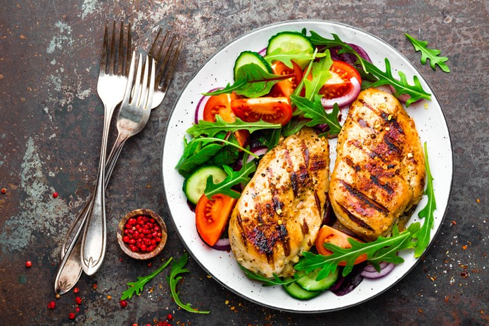

Uma dieta deve visar não só a perda de peso, mas também a reeducação alimentar, esta deve assim permitir que o peso seja perdido de forma saudável e que existe o ganho de novos hábitos alimentares e de estilo de vida, que promovam a manutenção do peso a longo prazo.
Existem várias dietas que cortam um grupo ou grupos de alimentos ou que, por outro lado, têm uma restrição muito grande. Estas tornam-se, assim, dietas muitos restritas e acarretam riscos associados, como o desenvolvimento de carências nutricionais.
Para que exista uma perda de peso é fundamental que exista um défice calórico, ou seja, o valor calórico ingerido diariamente deve ser inferior ao gasto diário, permitindo desta forma um défice calórico e o gasto das “reservas energéticas”.
Dentro do valor calórico disponível para consumo durante o dia, pode-se distribuir o mesmo entre os diferentes grupos de macronutrientes, como as proteínas, hidratos de carbono e lípidos (gorduras), permitindo desta forma que exista um consumo de alimentos dos vários grupos alimentares e evitando a ocorrência de carências nutricionais.
As necessidades nutricionais variam de pessoa para pessoa e dependem de vários parâmetros tais como: idade, género, atividade física, fase do ciclo de vida (como por exemplo gravidez, menopausa ou amamentação), história clínica (presença de alguma doença, análises clínicas, etc.), assim como dos objetivos individuais. Também a distribuição dos macronutrientes (proteína, lípidos ou gordura e hidratos de carbono) varia dependendo destes mesmos fatores, podendo haver necessidade ou não de reduzir ou aumentar o consumo de um destes macronutrientes, como por exemplo, aumentar o consumo de proteína e reduzir o consumo de hidratos de carbono.
